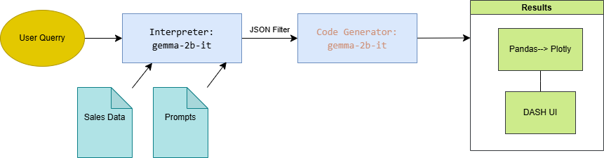

Senior Data Scientist | Applied AI delivering production models, forecasting, and product analytics. I lead end-to-end delivery across Databricks and Azure pipelines, from data modeling to CI/monitoring. Recent work spans revenue and demand forecasting, LLM assistants with OpenAI/LangChain/RAG, and experimentation frameworks that translate data into product decisions.

LLM Analytics Copilot
Problem: Business partners needed natural-language access to sales and pricing data without relying on ad-hoc SQL.
- Approach: Built a guarded prompt flow that translates questions into filtered queries and Plotly visuals inside Dash.
- Stack: Python, Dash, Pandas/Plotly, Hugging Face LLMs.
- Outcome: Self-serve insights and faster exploratory analysis for commercial reviews.

Demand Forecasting Workbench
Problem: Needed a transparent way to prototype and compare demand scenarios using Google Trends signals.
- Approach: Interactive UI to tune SARIMA configurations, backtest, and visualize forecasts for multiple markets.
- Stack: Python, Dash, Plotly, Statsmodels.
- Outcome: Reduced iteration time for demand plans and gave stakeholders clear forecast explainability.

LLM CV Q&A
Problem: Turn my CV into a responsive Q&A experience so recruiters get fast, tailored answers.
- Approach: Ingested CV content into a retrieval pipeline and used LLM prompts with guardrails to keep answers grounded.
- Stack: Python, Hugging Face LLMs, retrieval-augmented generation.
- Outcome: Reliable responses that highlight relevant experience within a few turns.
Related Work
Query Data with LLMs
- Problem: Enable business teams to explore sales data in natural language without manual SQL.
- Approach: Lightweight Hugging Face model interprets prompts, builds filters, and renders tables/visuals in Dash.
- Stack: Python, Pandas, Plotly Dash, Hugging Face LLMs.
- Outcome: Cuts ad-hoc analysis time and keeps insights consistent across teams.
LLM Chat with CV information
- Problem: Give recruiters and hiring managers instant answers grounded in my CV.
- Approach: Embedded CV content, retrieval pipeline, and prompt guardrails to return concise, relevant replies.
- Stack: Python, Hugging Face LLMs, retrieval-augmented generation.
- Outcome: Focused responses that surface the most relevant experience for each query.

MongoDB Tool
- Problem: Simplify checking MongoDB collections for data quality and quick operational queries.
- Approach: Dash UI connects to Mongo, enables browsing documents, and runs parameterized queries.
- Stack: Python, Dash, MongoDB, Plotly.
- Outcome: Faster debugging of pipelines and clearer demos for stakeholders.

Chess Data Vizualizer
- Problem: Explore the Kaggle chess games dataset without manual notebook work.
- Approach: Built dashboards for openings, outcomes, and player trends with interactive filters.
- Stack: Python, Pandas, Plotly Dash.
- Outcome: Surfaces patterns and insights for analysis or content creation.
Google Trends Forecasting
- Problem: Prototype search-driven demand forecasts with transparent parameter tuning.
- Approach: Interactive SARIMA configuration, backtesting, and Plotly overlays for multiple scenarios.
- Stack: Python, Dash, Plotly, Statsmodels.
- Outcome: Repeatable forecasts and model comparisons stakeholders can inspect.

CSV Files Visualizer
- Problem: Quickly inspect uploaded CSV files and spot trends across time series columns.
- Approach: Upload UI that profiles each column and auto-creates time series charts.
- Stack: Python, Dash, Plotly, Pandas.
- Outcome: Speeds data sanity checks and sharing with non-technical stakeholders.


{kind=link}